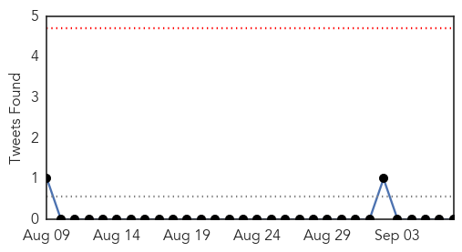
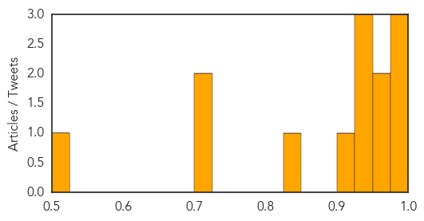
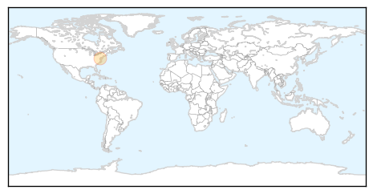

Dengue Fever
30-Day Web Trend
0 alerts, 1 warnings

30-Day Twitter Trend
0 alerts, 0 warnings

Article Locations

Article Confidences
Top Articles:
- 0.992
- Japan dengue outbreak traced to Tokyo's Yoyogi Park, experts warn global warming could increase spread of mosquito-borne virus
- 0.983
- Public health: Cleanliness Day observed in fight against dengue virus
- 0.979
- Jajpur man dies of dengue, toll 2
- 0.970
- Popular park in Tokyo closed over connections with dengue fever outbreak 08/09/2014
- 0.970
- Number of Dengue Fever Cases in Japan up to 74
- 0.936
- Disease warning for travellers
- 0.935
- Dengue Cases Soar to 1,005 in Odisha
- 0.934
- Dengue cases soar to 1,005 in Odisha
- 0.906
- Arunachal on alert after Japanese Encephalitis death
- 0.841
- Dengue-view system being developed to take on dengue
- 0.720
- Manila, Cagayan de Oro take steps to eliminate dengue fever
- 0.710
- Minister of Health visits Atlanta
- 0.517
- Lahoris up in arms against dengue
Top Tweets:
- 0.633
- Flavivirus news: Dengue Cases Soar to 1005 in Odisha - NDTV: NDTVDengue Cases Soar to 1005 in O... http://t.co/PptBD2k5tV pathogenposse
Pertussis
30-Day Web Trend
1 alerts, 0 warnings
30-Day Twitter Trend
0 alerts, 0 warnings

Article Locations
Article Confidences

Top Articles:
Top Tweets:
-
No tweets found for Sep 07, 2014